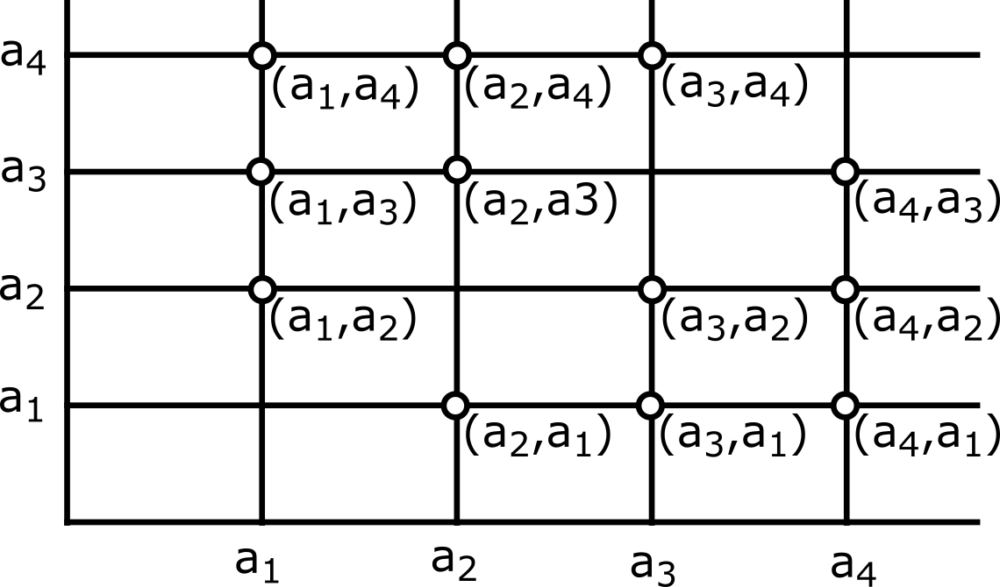

Permutáciou z n prvkov a1, a2, ..., an nazývame taký prvok množiny A x A x ... x A (t. j. usporiadanú n-ticu), ktorý obsahuje každý z prvkov a1, a2, ..., an práve raz.
Príklad D 1.1.
Všetky permutácie z prvkov 1, 2, 3 sú:
Zrejme prvý prvok môžeme vybrať tromi rôznymi spôsobmi, druhý prvok už len dvomi rôznymi spôsobmi, tretí prvok už len jedným spôsobom. Spolu máme:
3 * 2 * 1 = 3! možností.
Teda všetkých permutácií z troch prvkov je 3! = 6.
Všeobecne platí: počet všetkých permutácií z n prvkov je Pn = n!
Variáciou r-tej triedy z n prvkov a1, a2, ..., an (r ≤ n) nazývame taký prvok množiny A x A x ... x A (t. j. usporiadanú r-ticu), ktorý obsahuje každý z prvkov a1, a2, ..., an najviac raz.
Príklad D 1.2.
Varácie druhej triedy zo štyroch prvkov a1, a2, a3, a4 sú:

resp.
Celkom máme 4 * 3 = 12 variácií.
Príklad D 1.3.
Nájdime počet všetkých variácií tretej triedy zo šiestich prvkov a, b, c, d, e, f.
Zrejme prvý prvok môžeme vybrať šiestimi rôznymi spôsobmi, druhý prvok už len piatimi rôznymi spôsobmi a tretí prvok štyrmi rôznymi spôsobmi. Spolu máme 6 * 5 * 4 možností.
Teda počet všetkých variácii tretej priedy zo šiestich prvkov je:
6 * 5 * 4 = 6!⁄3!
Všeobecne platí: počet V(n, r) všetkých variácií r-tej triedy z n prvkov je:
V(n, r) = n * (n - 1) ... (n - r + 1) = n!⁄(n - r)!
Kombináciou r-tej triedy z n prvkov a1, a2, ..., an (r ≤ n) nazývame ľubovoľnú r-prvkovú podmnožinou množiny A = {a1, a2, ..., an}.
Príklad D 1.4.
Kombinácie tretej triedy zo štyroch prvkov a, b, c, d sú:
{a, b, c}, {a, b, d}, {a, c, d}, {b, c, d}.
Príklad D 1.5.
Porovnajme počet C(4, 3) všetkých kombinácií tretej triedy zo štyroch prvkov a, b, c, d s počtom V(4, 3) všetkých variácií tretej triedy zo štyroch prvkov a, b, c, d.
Teda V(4, 3) = C(4, 3) * 3! a z toho C(4, 3) = V(4, 3)/3!
Všeobecne platí: V(n, r) = C(n, r) * r!
a z toho nám vyplýva, že:
C(n, r) = V(n, r)⁄r! = n!⁄r! * (n - r)! =
kde C(n, r) je počet všetkých kombinácií r-tej triedy z n prvkov. Symbol sa nazýva kombinačné číslo.
Variácia r-tej triedy s opakovaním z n prvkov a1, a2, ..., an (r, n sú ľubovoľné prirodzené čísla) je každý prvok množiny A x A x ... x A, kde A = {a1, a2, ..., an}.
Príklad D 1.6.
Utvorme všetky variácie tretej triedy s opakovaním z dvoch prvkov a, b. Vieme, že sú to všetky prvky množiny A x A x A, kde A = {a, b}.
Keďže pre karteziánsky súčin platí asociatívny zákon, je A x A x A = (A x A) x A. Prvky A x A sú:
A x A má teda 2 * 2 = 22 prvkov. Prvky (A x A) x A sú:
(A x A) x A má teda 22 * 2 = 23 prvkov. Preto počet všetkých variácií tretej triedy s opakovaním z dvoch prvkov je 23
Všeobecne platí: Počet všetkých variácií r-tej triedy z n prvkov s opakovaním je nr
Príklad D 1.7.
Ak chceme v Sazke obsiahnuť všetky možnosti, musíme utvoriť všetky variácie dvanástej triedy z troch prvkov 0, 1, 2.
Teda ako tipy musíme vsadiť všetky prvky množiny A x A x ... x A, kde:
A = {0, 1, 2} a tých je 312 = 531 441.
Často nás zaujíma počet tzv. permutácií s opakovaním z prvkov, z ktorých niektoré sú rovnaké.
Príklad D 1.8.
Majme 3 prvky, z ktorých 2 sú rovnaké: a, a, b.
Ak by sme rovnaké prvky očíslovali a utvorili všetky permutácie z prvkov a1, a2, b, dostali by sme:
teda celkom 3! permutácií. Pretože však a1, a2 sú rovnaké, je ždy 2! usporiadaní (tie, ktoré vzniknú len permutovaním prvkov a1, a2) rovnakých.
Rôznych je teda len 3!/2! permutácií. Sú to:
(a, a, b), (a, b, a), (b, a, a).
Permutáciou s opakovaním z n prvkov, z ktorých n1 je rovných a1, n2 rovných a2, ..., nk prvkov rovných ak (n1 + n2 + ... + nk = n) rozumieme taký prvok množiny A x A x ... x A, v ktorom je n1 súradníc rovných a1, n2 rovných a2, ..., nk.